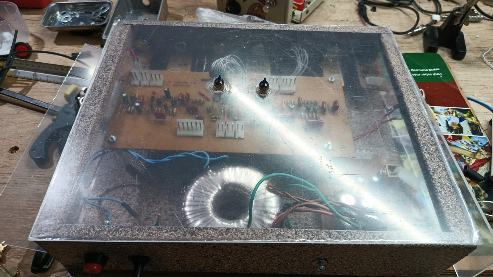
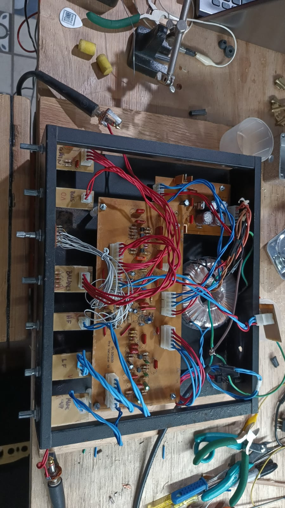

Realizado en conjunto con la empresa SP.SONIDO, este proyecto consiste en un preamplificador valvular con dos etapas de distorsión en paralelo. El dispositivo permite manipular la distorsión valvular modificando la polarización de la etapa, la cual puede mezclarse con la distorsión generada por diodos mediante un control de blend.
El equipo permite acentuar la generación de armónicos con un ecualizador para las altas frecuencias, así como también procesar y controlar la presencia de las bajas frecuencias sin distorsionarlas. Para el desarrollo del prototipo se utilizan herramientas como Smaart Suite para el análisis espectral y Altium Designer para el diseño de la PCB.

